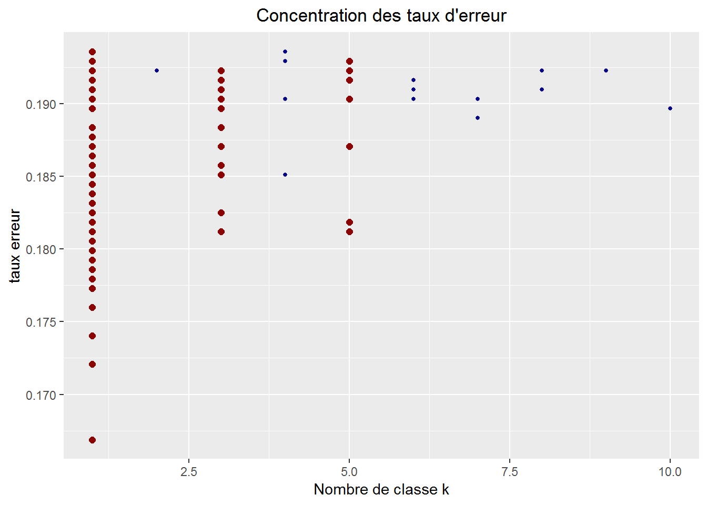

Le modèle KNN (les plus proches voisins) sera appliqué au jeu de données “SPAM”. Pour rappel, le fichier “SPAM” est composé de 4601 lignes et 58 colonnes, dont la variable classifiante binaire (1:spam, 0:non spam). Les détails sur le fihier sont disponibles sur l’onglet précedent, “Régression logistique”, ou via les liens :
La méthode des \(K\) plus proches voisins est une méthode d’apprentissage supervisée et non paramétrique (contrairement à la régression logistique). Cette méthode permet, à partir d’un échantillon d’apprentissage, d’estimer la place d’un nouvel individu “test” dans cet échantillon.
Il est en effet possible de définir une distance entre l’individu à estimer et les individus de l’échantillon d’apprentissage. Cette distance peut être mesurée par rapport à un nombre \(K\) d’individus de l’échantillon d’apprentissage (les \(K\) plus proches voisins).
Nous noterons notre individus à prédire \(x'_i\) et \(\hat y_i\) la valeur de sortie à estimer. Pour chaque individu \(x'_i\) :
Deux cas de calcul :
Dans le cas du fichier “SPAM”, la variable à prédire est binaire (1:spam, 0:non spam).
Calcul des distances :
Il existe plusieurs types de calcul pour la distance. Nous pouvons avoir comme base de calcul, la distance Euclidienne, la distance de Manhattan ou la distance de Hamming. Ici, nous allons utilisé la fonction knn {class} du package class qui utilise la distance Euclidienne.
Distance Euclidienne :
La distance entre deux points \(x\) et \(y\).
\(D_e(x,y)=\sqrt {\Sigma^{n}_{i=1}(x_i-y_i)^2}\)
Calcul de la valeur de sortie :
La valeur de sortie est la valeur estimée pour un individu test. Cette valeur correspond à la valeur \(\hat y_i\) de l’individu test. Dans le cas d’une variable classifiante binaire, nous allons contruire un estimteur binaire.
Estimateur binaire :
\(g_n(X)= \left\{\begin{array}{l} 1 \space si \space \Sigma^{K}_{j=1} 1_{y_i}(X)=1 \ge \Sigma^{K}_{j=1} 1_{y_i}(X)=0\\ 0 \space sinon\\\end{array}\right.\)
C’est à partir de la fontion knn {class} du package class que nous allons appliquer le modèle aux données du fichier “SPAM”.
La fonction knn() comprend quelques paramètres :
Application du modèle KNN (k=1) :
#########
# KNN
#########
library(class)
## 1 - Presentation du modèle
# utilisation de knn {class}
# presentation avec k=1 groupe (plus simple)
#utilisation avec train et test
index <- 1:nrow(Don_spam)
set.seed(1024)
trainIndex <- sample(index, trunc(length(index) * 0.666666666666667))
DATASET.train <- Don_spam[trainIndex, ]
#generation de l'echantillon TEST
DATASET.test <- Don_spam[-trainIndex, ]
## Application KNN k=1
mod.knn=knn(train=DATASET.train[,-58],test=DATASET.test[,-58],cl=DATASET.train$spam,
k=1)
# En sortie pour chaque individu des données DATASET.test
# attr(mod.knn,"nn.dist")[1:10] #distance euclidienne avec le plus proche voisin
# # 3.978720 2.523022 4.388677 12.542601
#
# attr(mod.knn,"nn.index")[1:10] # les voisins coté train
# # 2347 1723 2058 1095
#
# DATASET.train[attr(mod.knn,"nn.index")[1:4], 58] # les y dans l'ordre 0 0 1 1
#
#
# # la prediction de knn
# mod.knn[1:4] # 0 0 1 1 => on constate qu'il attribu la classe du train (car ici k=1)
#
# # la valeur de y sur test
# DATASET.test[1:4,58] #1 1 1 1 / les 2 premiers individus sont mal classés
# taux d'erreur des mal classés
err.knn <- sum(mod.knn!=DATASET.test$spam)/nrow(DATASET.test) #0.1870926 Il est facile de constater que la fonction knn() renvoit bien le plus proche voisin à partir de la distance Euclidienne minimum. Nous allons prendre la première ligne de l’échantillon test et calculer toutes les distances Euclidienne par rapport aux individus de l’échantillon train.
# vérif distance euclidienne sur le premier individu test
# DATASET.test[1,-58] #premiere ligne du test
# DATASET.train[2347,-58] #index 2347 correspondant au voisin coté train attr(mod.knn,"nn.index")[1]
mat=rbind(DATASET.train[2347,-58], DATASET.test[1,-58])
D.e=dist(mat, method = "euclidean") # 3.97872 ok avec attr(mod.knn,"nn.dist")[1]
## l'algo pour la ligne 1 du test, calcule toutes les distances euclidiennes avec le train
## et retiens la plus faible distance
#vérif plus faible distance euclidienne ?
d.euclid=c()
for(i in 1:dim(DATASET.train)[1]){
mat=rbind(DATASET.train[i,-58], DATASET.test[1,-58])
d.euclid[i] = dist(mat, method = "euclidean")
}
min(d.euclid) ; which.min(d.euclid)## [1] 3.97872## [1] 2347 # [1] 3.97872 [1] 2347 => ok on retrouve la distance pour la ligne 1 du test et l'individu 2347 du train
# qui minimise cette distance A partir des ces distances Euclidienne, et en ne gardant que la distance minimum, nous obtenons bien le même individu et la même distance. Pour k=2, nous aurions eu deux voisins et deux distances.
Maintenant que le fonctionnement du modèle est clair, nous allons exécuter le modèle avec différentes valeurs de \(K\).
On peut se demander naturellement, quel est l’impact de \(K\) sur le taux d’erreur final ? J’ai pu trouver des informations sur le sujet (duda hart and stork (classif pattern)).
Nous allons générer des échantillons train/test de façon aléatoire et appliquer la fonction knn() en faisant varier le paramètre \(K\) de 1 à 10.
## 2 - Trouver un nombre de classes k optimal
# creation d'echantillons aleatoires a partir du fichier spam
# Analyse du nombre de classe qui minimise l'erreur sur test
# article relatif : duda hart and stork (classif pattern)
res.prop.train.spam=c()
res.prop.test.spam=c()
err.knn = c()
min.err = c()
for(i in 1:100){ #bouclage pour application train/test
#initialisation du seed
set.seed(1024+i)
#generation de l'echantillon TRAIN
#rappel proportion au global "email 61%" "spam 39%"
trainIndex <- sample(index, trunc(length(index) * 0.666666666666667))
DATASET.train <- Don_spam[trainIndex, ]
#generation de l'echantillon TEST
DATASET.test <- Don_spam[-trainIndex, ]
## Application KNN
library(class)
# bouclage pour k=1 a k=10 classes
K <- seq(1,10,by=1)
err <- K
ind <- 0
for (j in K){
ind <- ind+1
mod_ppv <- knn(train=DATASET.train[,-58],test=DATASET.test[,-58],cl=DATASET.train$spam,
k=K[ind],prob = T) #mode clasification
err[ind] <- sum(mod_ppv!=DATASET.test[,58])/nrow(DATASET.test)
min.err = rbind(min.err, c(err[ind], K[ind]))
}
#l'erreur la plus faile est toujours pour k=1 !
err.knn = rbind(err.knn, summary(err))
} #fin for
### RESULTATS
# l'erreur moyenne sur les 100 tirages toutes classes confondues
tx_err.knn = mean(err.knn[,"Mean"]) # erreur moyenne 0.2087875Pour 100 tirages aléatoires et \(K\) allant de 1 à 10 classes, nous obtenons 1000 taux d’erreurs. L’erreur moyenne globale est d’environ 21% pour toutes les valeurs de \(K\).
Prenons maintenant les meilleurs taux d’erreurs, prenons les 10% taux d’erreurs les plus faibles. Sur ces 100 taux d’erreurs, nous allons voir comment se répartissent le nombre de plus proches voisins \(K\).
library(ggplot2)
# nombre de classes minimisant l'erreur de prediction
#min.err[order(min.err[,1]),][1:100,] #pour chaque valeur de K, l'erreur de prediction associée (ici 1000 resultats k=10 * i=100)
# [,1] [,2]
# [1,] 0.1668840 1
# [2,] 0.1720991 1
# [3,] 0.1727510 1
# [4,] 0.1740548 1
# [5,] 0.1760104 1
# [6,] 0.1760104 2
# [7,] 0.1779661 1
# [8,] 0.1779661 1
# [9,] 0.1779661 1
# [10,] 0.1779661 1
# parmis les taux d'erreur minimum, k=1 semble être le meilleur parametre
# prenons les 100 plus faibles taux d'erreurs
# repartion des 100 plus faibles taux d'erreurs
#prop.table(table( min.err[order(min.err[,1]),][1:100,][,2]) )
# 1 2 3 4 5 6 7 8 9 10
# 0.62 0.03 0.15 0.01 0.10 0.02 0.02 0.02 0.02 0.01
# k=1 est le plus représenté suivi par k=3 et k=5
#représentation du taux d'erreur en fonction des classes
#mise en évidence des classes 1,3 et 5
#plot(min.err[order(min.err[,1]),][1:100,])
k.choose = data.frame(min.err[order(min.err[,1]),][1:100,])
ggplot( k.choose, aes(x=k.choose$X2, y=k.choose$X1) ) +
geom_point(size = ifelse(k.choose$X2 %in% c(1,3,5), 2, 1 ),
color= ifelse(k.choose$X2 %in% c(1,3,5), "darkred", "darkblue" )) +
ggtitle("Concentration des taux d'erreur") +
ylab("taux erreur") + xlab("Nombre de classe k")+
theme(plot.title = element_text(hjust = 0.5))
On constate que pour les 10% de taux d’erreurs les plus faibles, les classes k=1, k=3 et k=5 se distinguent des autres. Et on remarque aussi que k=1 semble le paramètre qui minimise le plus le taux d’erreur de prédiction du modèle.
La fontion knn() retourne pour chaque ligne de l’échantillon test plusieurs valeurs :
On peut donc déduire le taux d’erreur des mals classés qui est de 19% environ.